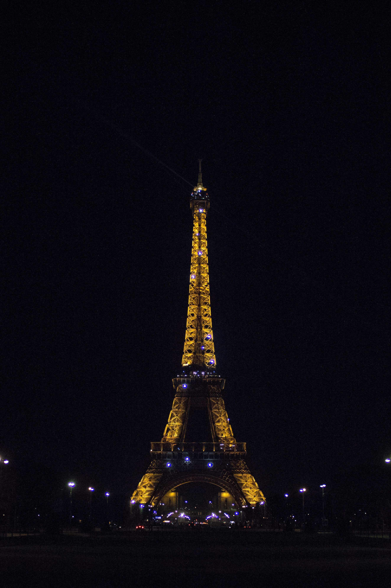

Paris
Introduction
Paris (nicknamed the City of light) is the capital city of France, and the largest city in France. The area is 105 km2, and around 2.15 million people live there. If suburbs are counted, the population of the Paris area rises to 12 million people. The Seine river runs through the oldest part of Paris, and divides it into two parts, known as the Left Bank and the Right Bank. It is surrounded by many forests.

History
The city of lights’, ‘the city of Romance’, ‘the culinary capital of the world’, all these are just names Paris, France is known by. Over seven million people visit each year. Paris, France is one of the most amazing places you will ever visit. There are so many phenomenal things to see and do you’ll never get bored.
Paris is also the center of French economy, politics, traffic and culture. Paris has many art museums and historical buildings. As a traffic center, Paris has a very good underground subway system (called the Metro). It also has two airports. The Metro was built in 1900, and its total length is more than 200 km.
The city has a multi-cultural style, because 20% of the people there are from outside France. There are many different restaurants with all kinds of food. Paris also has some types of pollution like air pollution and light pollution.
The most Prominent landmark in Paris would have to be the Eiffel Tower. More the seven million people visit the Eiffel Tower each year. I would be grateful if I got s chance to go to the Paris
Description
Paris is one of the most distinctive cities in the world. It is a city has its own character, especially because it was accompanied by beauty, art, culture and revolution. It embraced the French Revolution which has made a very significant shift in the course of history.
Paris is considered the richest region on the European level and the fourth richest in the world. The area of Paris is estimated at approximately 105 square kilometers, and the total population has been estimated at about 12 million. The French city of Paris is home to many different international organizations and organizations, such as the Organization for Economic Co-operation and Development (OECD), UNESCO, the International Chamber of Commerce (ICC).